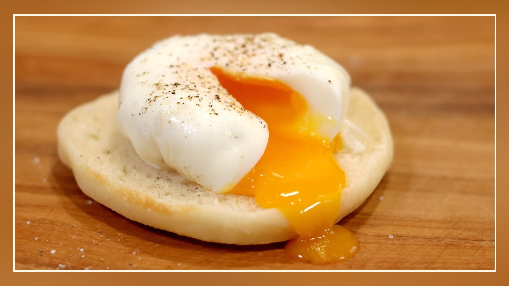

Huevo Pochado

El huevo pochado es una receta simple pero muy sabrosa para el desayuno
Esta receta es ideal para un desayuno rapido pero contundente
Ingredientes
- Aceite
- Sal
- Alusa plast
- Aliños de preferencia
Pasos
- En una taza poner alusa plast por dentro
- Agregar un poco de aceite en el alusa plast y distribuirlo lo más equitativamente posible
- Romper el huevo y ponerlo dentro del plastico con cuidado de que no se rompa la llema
- Agregar un poco de sal y aliños de preferencia
- Juntar las esquinas del alusa plast y amarrarlo, formando una especie de bolsa
- Hervir agua, cuando hierva poner la temperatura a nivel medio
- Agregar la bolsa
- Esperar 5 minutos o hasta que se vea que la parte "exterior" del huevo este firme
- Sacar la bolsa, abrir y servir el huevo. Recomendación personal, en pan tostado con mantequilla
- Finalmente, si se realizo bien, la clara debe estar firme pero la yema debe quedar liquida